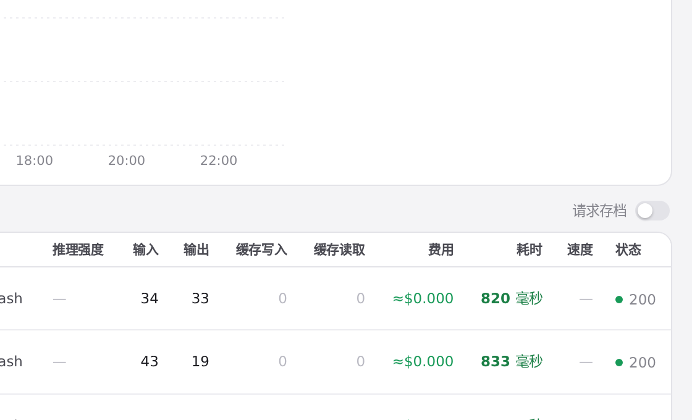
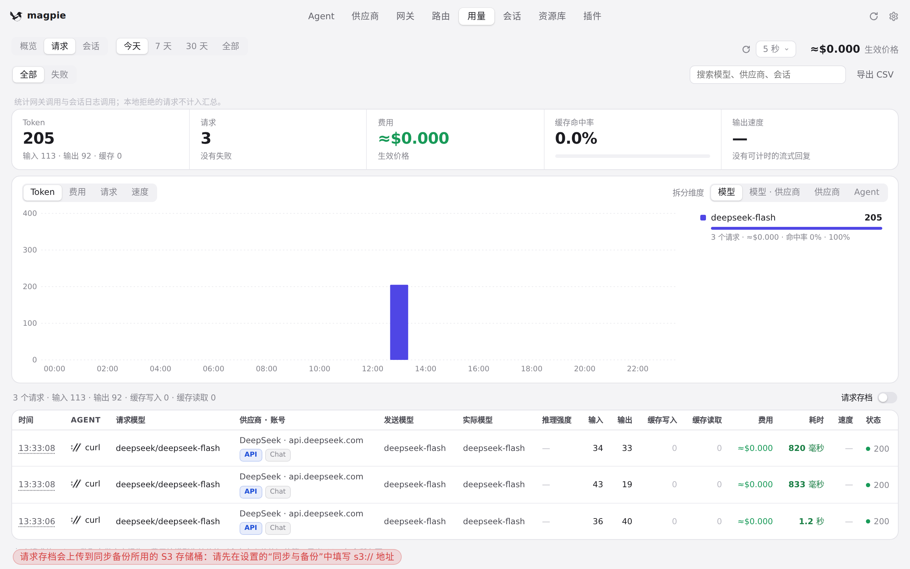
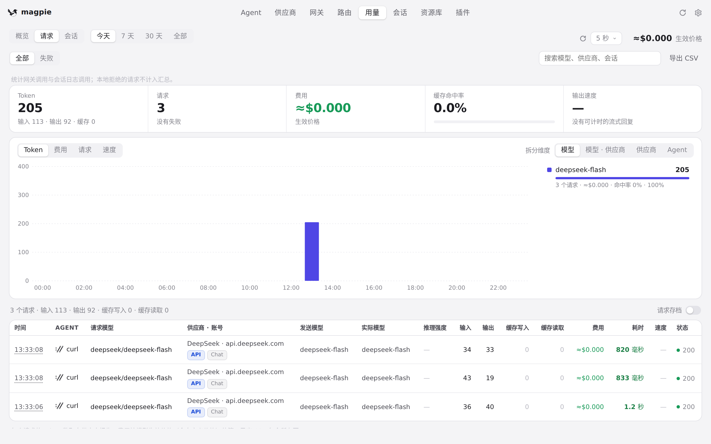

#1017 界面预览
commit ef5fba2 · 回到 PR · app.js 在进入/直开「用量」时会一并读取 providers 状态（原来只拉用量），并把 renderLedger 里遮挡模块级 providers 的同名局部变量改名为 provOpts；于是「用量 · 请求」栏右上角的请求档案开关会按真实网关状态画出来，而不是永远隐藏。
红线是鼠标走过的轨迹，红色圆环是一次点击；底部文字是这一步在做什么。空格暂停，← → 逐段查看。

「用量 · 请求」栏右上角的档案开关 · 「请求」栏右上角

「用量 · 请求」栏右上角的档案开关 · 打开开关之后的「请求」栏

从别的页切回「用量」时的同一处 · 从「供应商」切回后，「请求」栏右上角